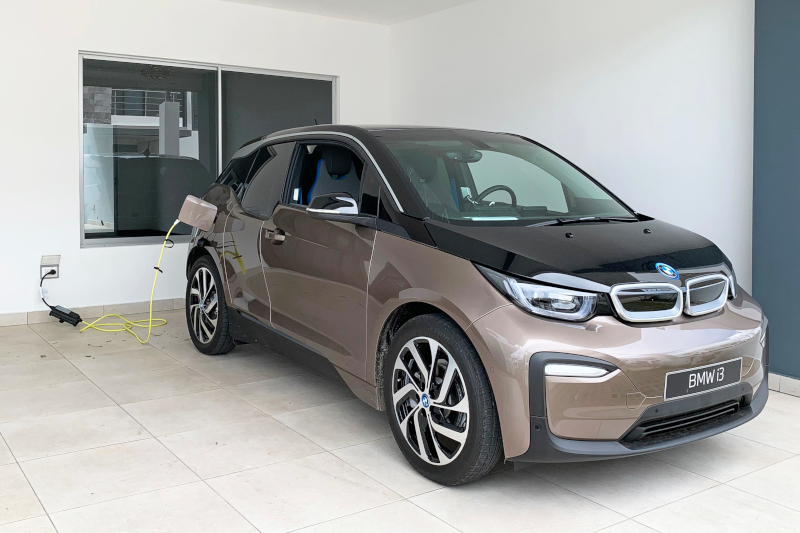
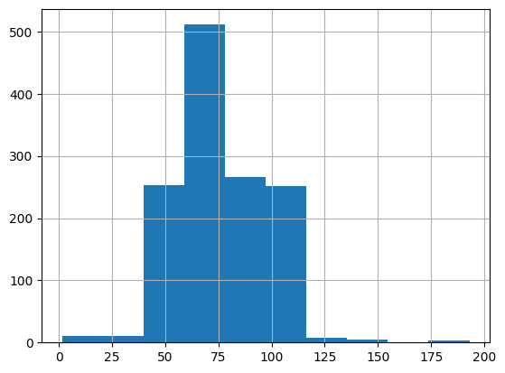
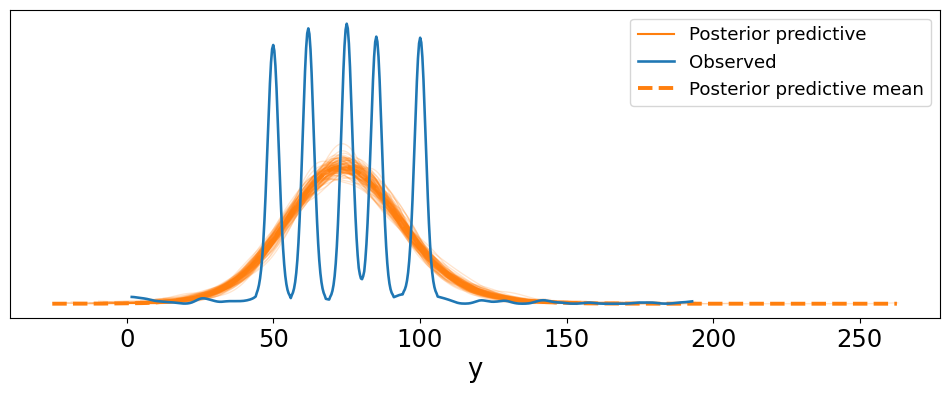
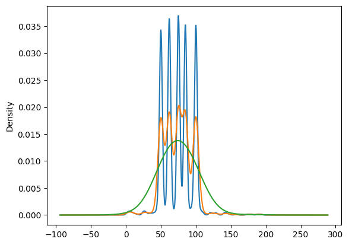
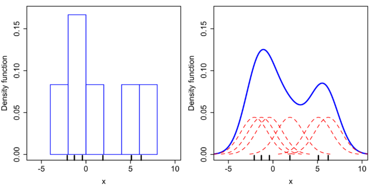
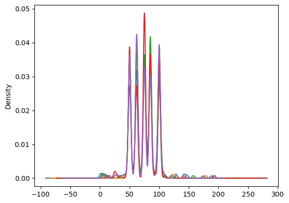

import pandas as pdEV Battery Capacity

Electric cars have gotten significantly more popular, with Teslas and other electric vehicles becoming a common sight. A commonality between all types of EVs is the battery, which must be charged because it depletes during use. Battery capacity is a measure of a battery’s ability to produce continuous power from a charge, which is similar to the max fuel capacity of a gasoline-powered car.
The Data
I found a dataset which has numerous charging characteristics, where each row represents a single charge by a certain EV and its owner. I am only focusing on battery capacity (in Kilowatt Hours).
data_set = pd.read_csv("ev_charging_patterns.csv")
data = data_set["Battery Capacity (kWh)"]
data0 108.463007
1 100.000000
2 75.000000
3 50.000000
4 50.000000
...
1315 100.000000
1316 100.000000
1317 100.000000
1318 85.000000
1319 120.447195
Name: Battery Capacity (kWh), Length: 1320, dtype: float64data.hist()
This histogram shows that most of the data is in the range between 25 and 125 and is skewed left. There are very few data points that lie outside the main distribution, although there is a small portion in the range between 125 and 200.
Initial Plunge
I decided to try the Skewed Student-t Distribution after perusing the PreliZ documentation. It seems to be able to represent a skewed curve, as well as allowing the shape to match the sudden drops that we see in the data. Importantly, it is a continuous distribution, can be skewed, and supports at least positive real numbers. I experimented with this distribution to get a feel for what each of the parameters does:
import preliz as pzpz.SkewStudentT().plot_interactive()In this distribution:
mu- \(\mu\) is the location parameter, controlling the location of the distribution along the axissigma- \(\sigma\) is the scale parameter, describing the curve’s “flatness”aandbcontrol the shape of the curve and affect its skewness
The Priors
The priors should match my prior knowledge. I know little about EV’s, so I want a weak prior. I do know that generally, there is a range of values that automakers make batteries for, and that the probability of finding a vehicle outside that range will be low. I will use this logical knowledge to decide what distributions to choose for my prior.
For a first experiment, I decided to make the priors all uniform. This doesn’t model my assumptions. I just wanted to perform a test run before continuing.
import pymc as pmwith pm.Model() as model1:
### PRIORS ###
# Don't mind the uniform distributions. This was a first trial, so the priors in this test
# were not yet based on my actual assumptions.
mu = pm.Uniform("μ", lower=0, upper=200)
sigma = pm.Uniform("σ", lower=0, upper=100)
a = pm.Uniform("a", lower=0, upper=100)
b = pm.Uniform("b", lower=0, upper=100)
### POSTERIOR ###
y = pm.SkewStudentT("y", mu=mu, sigma=sigma, a=a, b=b, observed=data)
data1 = pm.sample()Auto-assigning NUTS sampler...
Initializing NUTS using jitter+adapt_diag...
Multiprocess sampling (4 chains in 4 jobs)
NUTS: [μ, σ, a, b]Sampling 4 chains for 1_000 tune and 1_000 draw iterations (4_000 + 4_000 draws total) took 29 seconds.
There were 8 divergences after tuning. Increase `target_accept` or reparameterize.pm.sample_posterior_predictive(data1, model=model1, extend_inferencedata=True) # Posterior predictive checkSampling: [y]arviz.InferenceData
-
<xarray.Dataset> Size: 136kB Dimensions: (chain: 4, draw: 1000) Coordinates: * chain (chain) int64 32B 0 1 2 3 * draw (draw) int64 8kB 0 1 2 3 4 5 6 7 ... 993 994 995 996 997 998 999 Data variables: a (chain, draw) float64 32kB 9.343 8.44 6.722 ... 7.978 13.17 14.41 b (chain, draw) float64 32kB 7.197 7.151 6.092 ... 7.352 10.11 10.64 μ (chain, draw) float64 32kB 64.1 68.0 71.12 ... 70.09 60.8 59.52 σ (chain, draw) float64 32kB 18.61 18.84 18.23 ... 18.85 19.54 19.38 Attributes: created_at: 2024-10-18T15:45:10.461342+00:00 arviz_version: 0.19.0 inference_library: pymc inference_library_version: 5.16.2 sampling_time: 29.01191520690918 tuning_steps: 1000 -
<xarray.Dataset> Size: 42MB Dimensions: (chain: 4, draw: 1000, y_dim_2: 1320) Coordinates: * chain (chain) int64 32B 0 1 2 3 * draw (draw) int64 8kB 0 1 2 3 4 5 6 7 ... 993 994 995 996 997 998 999 * y_dim_2 (y_dim_2) int64 11kB 0 1 2 3 4 5 ... 1314 1315 1316 1317 1318 1319 Data variables: y (chain, draw, y_dim_2) float64 42MB 96.53 66.13 ... 77.97 57.87 Attributes: created_at: 2024-10-18T15:45:11.604483+00:00 arviz_version: 0.19.0 inference_library: pymc inference_library_version: 5.16.2 -
<xarray.Dataset> Size: 496kB Dimensions: (chain: 4, draw: 1000) Coordinates: * chain (chain) int64 32B 0 1 2 3 * draw (draw) int64 8kB 0 1 2 3 4 5 ... 995 996 997 998 999 Data variables: (12/17) acceptance_rate (chain, draw) float64 32kB 0.9884 0.986 ... 0.4573 diverging (chain, draw) bool 4kB False False ... False False energy (chain, draw) float64 32kB 5.854e+03 ... 5.858e+03 energy_error (chain, draw) float64 32kB 0.05289 ... 0.4048 index_in_trajectory (chain, draw) int64 32kB 22 -41 56 -19 ... -37 46 -5 largest_eigval (chain, draw) float64 32kB nan nan nan ... nan nan ... ... process_time_diff (chain, draw) float64 32kB 0.007682 ... 0.008515 reached_max_treedepth (chain, draw) bool 4kB False False ... False False smallest_eigval (chain, draw) float64 32kB nan nan nan ... nan nan step_size (chain, draw) float64 32kB 0.05105 ... 0.04431 step_size_bar (chain, draw) float64 32kB 0.0478 0.0478 ... 0.05153 tree_depth (chain, draw) int64 32kB 5 6 7 5 5 6 ... 6 7 4 7 6 5 Attributes: created_at: 2024-10-18T15:45:10.478493+00:00 arviz_version: 0.19.0 inference_library: pymc inference_library_version: 5.16.2 sampling_time: 29.01191520690918 tuning_steps: 1000 -
<xarray.Dataset> Size: 21kB Dimensions: (y_dim_0: 1320) Coordinates: * y_dim_0 (y_dim_0) int64 11kB 0 1 2 3 4 5 ... 1314 1315 1316 1317 1318 1319 Data variables: y (y_dim_0) float64 11kB 108.5 100.0 75.0 50.0 ... 100.0 85.0 120.4 Attributes: created_at: 2024-10-18T15:45:10.483748+00:00 arviz_version: 0.19.0 inference_library: pymc inference_library_version: 5.16.2
The PPC
import arviz as azaz.plot_ppc(data1, num_pp_samples=100, figsize=(12, 4), colors=["C1", "C0", "C1"])
AAAA!
First of all, the posterior predictive does not seem like a good match to the data set. Notice that the curve doesn’t even come up to the top of the observed data, and doesn’t match the shape. This was to be expected, considering I used dummy priors.
The bigger result of this test run is that the data is completely different from what I had expected it to look like. Notice the blue (observed) curve is multimodal, with 5 distinct peaks. This curve cannot be accurately modeled with the current tools available to us.
I accidentally stumbled upon the fact that there seem to be five discrete values for EV battery capacity, and everything else is just variation from discreteness. To confirm, I plotted a kernel density estimation (KDE) of the data set:
data.plot(kind='kde', bw_method=0.1); data.plot(kind='kde', bw_method=0.2); data.plot(kind='kde', bw_method=1)
For reference, the KDE of the chemshift data looked like a smoother curve, even at smaller values for bw_method (the bandwidth parameter). Notice that if we use a rougher estimation of the distribution density, the curves go away. Essentially, a histogram does the same thing: the histogram masked the true nature of the dataset, making it look like a single-mode distribution.
The image below is an example of the difference between how histograms and KDEs are calculated. Note that this example is not related to my data. Source: Drleft at English Wikipedia, CC BY-SA 3.0, https://commons.wikimedia.org/w/index.php?curid=57332968

The reason for this curve seems to be that car battery capacities come in 5 different discrete capacities, and the slight variation is caused by slight variation from those 5 types.
At this point, there are two things I can do. First, I can model all the data using a discrete distribution, but that requires discrete values. Unfortunately, my data points themselves are decimal values that vary from the fixed capacities. Second, I can attempt to filter a subset of the data in order to isolate on of the five curves, and explore from there. This is what I’ll choose to do, but it might not succeed (I need a strategy to extract one of the curves).
Analyzing a data subset
Now I am back at the drawing board. The whole data set actually has many different columns that associate specific data to each charge. Perhaps if I filter by a factor by vehicle type, I will be able to isolate a single one of those curves.
data_set| User ID | Vehicle Model | Battery Capacity (kWh) | Charging Station ID | Charging Station Location | Charging Start Time | Charging End Time | Energy Consumed (kWh) | Charging Duration (hours) | Charging Rate (kW) | Charging Cost (USD) | Time of Day | Day of Week | State of Charge (Start %) | State of Charge (End %) | Distance Driven (since last charge) (km) | Temperature (°C) | Vehicle Age (years) | Charger Type | User Type | |
|---|---|---|---|---|---|---|---|---|---|---|---|---|---|---|---|---|---|---|---|---|
| 0 | User_1 | BMW i3 | 108.463007 | Station_391 | Houston | 2024-01-01 00:00:00 | 2024-01-01 00:39:00 | 60.712346 | 0.591363 | 36.389181 | 13.087717 | Evening | Tuesday | 29.371576 | 86.119962 | 293.602111 | 27.947953 | 2.0 | DC Fast Charger | Commuter |
| 1 | User_2 | Hyundai Kona | 100.000000 | Station_428 | San Francisco | 2024-01-01 01:00:00 | 2024-01-01 03:01:00 | 12.339275 | 3.133652 | 30.677735 | 21.128448 | Morning | Monday | 10.115778 | 84.664344 | 112.112804 | 14.311026 | 3.0 | Level 1 | Casual Driver |
| 2 | User_3 | Chevy Bolt | 75.000000 | Station_181 | San Francisco | 2024-01-01 02:00:00 | 2024-01-01 04:48:00 | 19.128876 | 2.452653 | 27.513593 | 35.667270 | Morning | Thursday | 6.854604 | 69.917615 | 71.799253 | 21.002002 | 2.0 | Level 2 | Commuter |
| 3 | User_4 | Hyundai Kona | 50.000000 | Station_327 | Houston | 2024-01-01 03:00:00 | 2024-01-01 06:42:00 | 79.457824 | 1.266431 | 32.882870 | 13.036239 | Evening | Saturday | 83.120003 | 99.624328 | 199.577785 | 38.316313 | 1.0 | Level 1 | Long-Distance Traveler |
| 4 | User_5 | Hyundai Kona | 50.000000 | Station_108 | Los Angeles | 2024-01-01 04:00:00 | 2024-01-01 05:46:00 | 19.629104 | 2.019765 | 10.215712 | 10.161471 | Morning | Saturday | 54.258950 | 63.743786 | 203.661847 | -7.834199 | 1.0 | Level 1 | Long-Distance Traveler |
| ... | ... | ... | ... | ... | ... | ... | ... | ... | ... | ... | ... | ... | ... | ... | ... | ... | ... | ... | ... | ... |
| 1315 | User_1316 | Nissan Leaf | 100.000000 | Station_57 | New York | 2024-02-24 19:00:00 | 2024-02-24 20:30:00 | 42.011654 | 1.426444 | 5.895475 | 22.081164 | Evening | Sunday | 39.204102 | 83.915952 | 239.601075 | 1.919655 | 7.0 | DC Fast Charger | Commuter |
| 1316 | User_1317 | BMW i3 | 100.000000 | Station_40 | New York | 2024-02-24 20:00:00 | 2024-02-24 20:44:00 | 68.185853 | 3.238212 | 18.388012 | 5.067806 | Evening | Tuesday | 31.456375 | 93.096461 | 164.376022 | 34.029775 | 4.0 | Level 2 | Casual Driver |
| 1317 | User_1318 | Nissan Leaf | 100.000000 | Station_374 | New York | 2024-02-24 21:00:00 | 2024-02-24 23:03:00 | 18.895102 | 3.267122 | 45.482066 | 37.255002 | Evening | Tuesday | 71.903081 | 78.678879 | 226.519258 | 20.358761 | 5.0 | DC Fast Charger | Commuter |
| 1318 | User_1319 | Chevy Bolt | 85.000000 | Station_336 | San Francisco | 2024-02-24 22:00:00 | 2024-02-24 23:20:00 | 13.756252 | 2.754527 | 38.148183 | 39.046146 | Afternoon | Sunday | 76.187997 | 65.926573 | 291.494076 | 24.134598 | 5.0 | Level 2 | Commuter |
| 1319 | User_1320 | Nissan Leaf | 120.447195 | Station_128 | Los Angeles | 2024-02-24 23:00:00 | 2024-02-24 23:56:00 | 63.652570 | 3.740970 | 33.704226 | 10.863674 | Evening | Monday | 59.338076 | 56.692439 | 14.449236 | -6.966593 | 5.0 | DC Fast Charger | Commuter |
1320 rows × 20 columns
I decided to try filtering by Vehicle Model. This is the make and model of the vehicle used at a given charge. Given that there are five distinct capacities, I am guessing that each car type has a single type of battery capacity of those five.
# Here, I am filtering by vehicle model and then plotting its battery capacity KDE.
data_set.loc[data_set["Vehicle Model"] == "BMW i3"]["Battery Capacity (kWh)"].plot(kind="kde", bw_method=0.1)
data_set.loc[data_set["Vehicle Model"] == "Hyundai Kona"]["Battery Capacity (kWh)"].plot(kind="kde", bw_method=0.1)
data_set.loc[data_set["Vehicle Model"] == "Nissan Leaf"]["Battery Capacity (kWh)"].plot(kind="kde", bw_method=0.1)
data_set.loc[data_set["Vehicle Model"] == "Chevy Bolt"]["Battery Capacity (kWh)"].plot(kind="kde", bw_method=0.1)
data_set.loc[data_set["Vehicle Model"] == "Tesla Model 3"]["Battery Capacity (kWh)"].plot(kind="kde", bw_method=0.1)
Nope. Notice that all five cars (denoted by different colors) still have five peaks. Importantly, all follow the exact five values, although the height of each curve (density) is different for each car model.
Of the five car types I experimented with, all follow the same five values. My theory is that as battery capacity depletes over time, a car will round it to the closest of five values. However, I am unsure if this is the case. I would have to do more research about electric vehicles.
Conclusion
At this point I am calling it a day. In my attempt to make a model, I ended up making a much larger discovery about the data set. This revealed something about electric vehicles that I didn’t know before starting the project.
I believe that had the curve looked like my assumption from the histogram, a Skew Student’s-T distribution would be ideal. Additionally, my choice of a weak prior would have been justified, judging by my electric vehicle knowledge.
However, it turns out the data is too complicated to analyze as a whole at this point in the course. To circumvent this, I tried to isolate a specific curve, but to no avail.
From the project, I can conclude that EV battery capacity is more complicated than it seems. It clusters around 5 discrete values, irrespective of the car make and model. I will keep this data set to use in a future project when we will have the tools to make more specific observations.